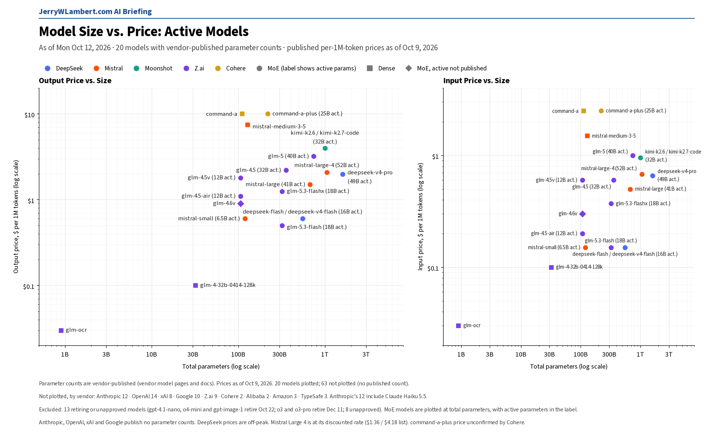
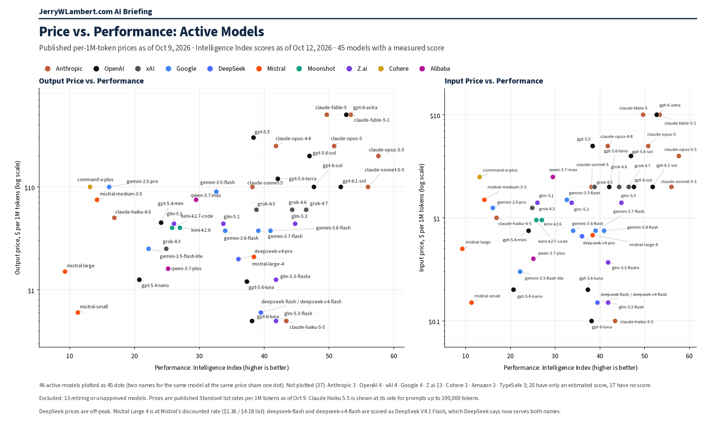

Daily Model Brief, October 12, 2026
Google retired gemini-3.5-flash and gemini-3.7-flash from its price list and now routes them to 3.6 and 3.8 Flash. No other list-price change forces a budget rewrite today; Z.ai is on watch.
Download PDFExecutive Summary
Google retired two Gemini Flash models. It dropped the prices for gemini-3.5-flash and gemini-3.7-flash, and dropped both ids from its model list. Google now says requests to gemini-3.5-flash are automatically routed to gemini-3.6-flash, and requests to gemini-3.7-flash go to gemini-3.8-flash, with no shutdown date announced.
gemini-3.5-flash was listed at $1.50 input and $9.00 output per million tokens. The model Google now serves for that id (gemini-3.6-flash) lists at $0.75 / $3.75, about half the old price. gemini-3.7-flash requests now go to gemini-3.8-flash.
Z.ai dropped 10 model ids (the GLM-4.5 family, GLM-4.7-FlashX, GLM-4-32B, GLM-4.6V / 4.6V-FlashX / 4.5V, and GLM-OCR) from its price list with no deprecation notice. Their model guides are still up, so these models look at risk but are not confirmed retired.
No other vendor changed a published token price that forces a budget rewrite. Anthropic's list rates are unchanged, but it now says Claude 4.7 and later (and Mythos Preview) use a newer tokenizer that produces about 30% more tokens for the same text, which raises effective cost per task at the same list rate. OpenAI listed gpt-rosalind-discovery at $5 / $25, but it is trusted-access only and stays off.
Alibaba list prices for qwen3.7-max and qwen3.7-plus are unchanged. TypeSafe Jev list prices are unchanged. IBM Granite holds at $0.0636 / $0.265. Prices from Amazon, Microsoft and ByteDance could not be confirmed today; Cohere still publishes no token price.
What This Means for Customers
- If you still call
gemini-3.5-flashorgemini-3.7-flash, Google is already routing those requests togemini-3.6-flashandgemini-3.8-flash. Move callers to the model you intend to use and budget at its price. - If you price Claude 4.7 or later from list rates alone, re-check task cost. Anthropic says the newer tokenizer produces about 30% more tokens for the same text, so effective cost per task rises even when the published $/MTok does not.
- Anthropic also now states that its US-only inference_geo 1.1x multiplier applies to the Haiku 5.5 band for prompts over 100,000 tokens.
- OpenAI's gpt-rosalind-discovery is listed but trusted-access only. Do not budget it as a generally available model.
- Z.ai: ten model ids disappeared from its price list with no retirement notice. Treat them as at risk of retirement and have a fallback ready.
- October 22 and 23 hold.
gpt-4.1-nano,o4-miniandgpt-image-1(OpenAI) shut down the evening of October 22 (CT), along with Google'sgemini-omni-flash-previewand Veo 3.1 previews. Google's deep-research-pro preview shuts down October 23. Perplexity retires its routes to older OpenAI models at 7:00 PM CT on October 23. - Claude Haiku 4.5 is still active, with retirement not sooner than October 15 and no date set. Keep a tested fallback ready.
New Models and Price Changes
Prices in USD per 1M tokens.
| Vendor | Model ID | Status | Input | Cached | Output |
|---|---|---|---|---|---|
| gemini-3.5-flash | Retired from the price list. Google routes requests to gemini-3.6-flash, which lists at about half the price. | $1.50 (served: $0.75) | $0.15 ($0.075) | $9.00 ($3.75) | |
| gemini-3.7-flash | Retired from the price list. Google routes requests to gemini-3.8-flash. | $0.75 | $0.075 | $3.75 | |
| OpenAI | gpt-rosalind-discovery | Newly listed beside gpt-rosalind-research; trusted-access only. | $5.00 | $0.50 | $25.00 |
| Anthropic | claude-4.7+ / Mythos Preview | List $/MTok unchanged. Newer tokenizer (~30% more tokens for the same text) raises effective cost per task. | Unchanged | Unchanged | Unchanged |
| Alibaba | qwen3.7-max | Unchanged (international list price). | $2.50 | Not listed | $7.50 |
| Alibaba | qwen3.7-plus | Unchanged (international list price). | $0.40 | Not listed | $1.60 |
| TypeSafe | jev-1.13.0 / jev-latest / jev-preview | Unchanged. | $0.042 | — | $0 |
| IBM | granite-4-h-small | Unchanged. | $0.0636 | Not listed | $0.265 |
- Google says requests to gemini-3.5-flash route to gemini-3.6-flash and requests to gemini-3.7-flash route to gemini-3.8-flash. No shutdown date is announced for either id.
- Z.ai dropped from its price list (still no deprecation notice; model guides still online): glm-4.7-flashx, glm-4.5, glm-4.5-x, glm-4.5-air, glm-4.5-airx, glm-4-32b-0414-128k, glm-4.6v, glm-4.6v-flashx, glm-4.5v, glm-ocr. Remaining Z.ai list prices (glm-5.3 / 5.3-flash / 5.3-flashx / 5.2 / 5.1 / 5 / 4.7 / 4.6) unchanged. On watch.
- Anthropic also revised tool-overhead token counts (text_editor_20250728: 974 / 745 tokens) and now states inference_geo 1.1x applies to the Haiku 5.5 >100k band. Mythos remains limited access.
- xAI, DeepSeek, Moonshot, MiniMax, Mistral, Perplexity and Meta published token prices were unchanged since Friday's brief. Mistral Large 4 stays on sale at $0.68 input and $2.09 output, with no end date.
- Prices from Amazon, Microsoft, ByteDance and IBM could not be confirmed today; Cohere still publishes no token prices. Their last confirmed prices stand.
Deprecations
| Vendor | Model ID | Shutdown (CT) | Replacement | Note |
|---|---|---|---|---|
| gemini-3.5-flash | No shutdown date announced | gemini-3.6-flash (Google auto-route) | New today. Pricing and models pages dropped the id (page updated 2026-10-09 UTC). | |
| gemini-3.7-flash | No shutdown date announced | gemini-3.8-flash (Google auto-route) | New today. Same pages. | |
| deep-research-pro-preview-12-2025 | Fri Oct 23, 2026 (time not stated) | deep-research-preview-04-2026 | Unchanged. | |
| OpenAI | gpt-4.1-nano o4-mini gpt-image-1 | Thu Oct 22, 2026, 7:00 PM CT | gpt-5.6-luna gpt-5.6-terra gpt-image-2.5-sunburst or gpt-image-2.5-flare | Unchanged. OpenAI lists Oct 23 with no time; 7:00 PM CT Oct 22 is 00:00 UTC Oct 23. |
| gemini-omni-flash-preview | Thu Oct 22, 2026 (time not stated) | gemini-omni-1.1-flash | Unchanged. | |
| veo-3.1-generate-preview veo-3.1-fast-generate-preview veo-3.1-lite-generate-preview | Thu Oct 22, 2026 (time not stated) | gemini-omni-1.1-flash | Unchanged. | |
| gemini-3.1-flash-image | No shutdown date announced | gemini-nano-banana-2.1 | Unchanged. | |
| gemini-3.1-flash-tts-preview gemini-2.5-flash-preview-tts gemini-2.5-pro-preview-tts | Tue Nov 17, 2026 (time not stated) | gemini-3.8-flash-tts or gemini-3.8-flash-lite-tts | Unchanged. | |
| gemini-3.1-flash-live-preview gemini-2.5-flash-native-audio-preview-12-2025 | Tue Nov 17, 2026 (time not stated) | gemini-3.8-live | Unchanged. | |
| Anthropic | claude-sonnet-4-5-20250929 | Mon Nov 30, 2026 (time not stated) | claude-sonnet-5-5 | Unchanged. |
| Anthropic | claude-haiku-4-5-20251001 | Not sooner than Thu Oct 15, 2026; no date set | None named | Watch item. Still active. |
| Cohere | command-r command-r-plus | Deprecated Sep 15, 2025; no shutdown date set | command-r-08-2024 command-r-plus-08-2024 command-a-03-2025 | Closed to new customers; existing users keep access until retirement. |
- Perplexity will retire its Agent API and Orchestrator API routes to older OpenAI models (openai/gpt-5.4, gpt-5.4-mini, gpt-5.4-nano, gpt-5.2, gpt-5.1, gpt-5 and gpt-5-mini) at 7:00 PM CT on Fri Oct 23, 2026 (00:00 UTC Oct 24). Unchanged.
- Google also lists deep-research-preview-04-2026 and deep-research-max-preview-04-2026 with no shutdown date announced.
- Unverified: Google's deprecation schedule still shows gemini-2.5-flash-image shutting down Mon Mar 15, 2027, with gemini-3.1-flash-lite-image as the replacement, while its price list says it shut down Oct 2, 2026. Confirm with Google before you budget either date.
Model Size vs. Price

Across the 20 active models whose vendors publish parameter counts, price rises only loosely with total size (rank correlation 0.39 on output price). Anthropic, OpenAI, xAI and Google publish no parameter counts, so their models, including Claude Haiku 5.5 and GPT-6.1 Sol, are not plotted. Prices as of October 9, 2026.
Price vs. Performance

Across the 46 active models with an Intelligence Index score, price rises with performance only loosely (rank correlation 0.43 on output price). Claude Haiku 5.5 still leads at $0.50 or less per million output tokens (43.4). GPT-6.1 Sol scores 51.8 at $10 Standard. Chart prices are as of October 9, 2026.
All times Central. Vendor prices, dates and model IDs are as of 8:54 AM CT on October 12, 2026. Chart prices are as of October 9, 2026. Performance scores are as of October 12, 2026. Items that could not be confirmed are marked unverified.